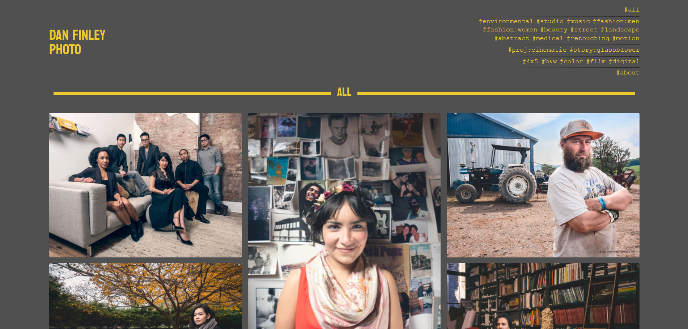

photography & video

Dan's photography has received multiple awards and earned him induction into Nikon's Emerging Photographer Hall of Fame. As a filmmaker, he has managed projects from concept to distribution and has been featured by The New York Times.
His photography and video portfolio is hosted on a separate website:
Photography & Video Portfolio